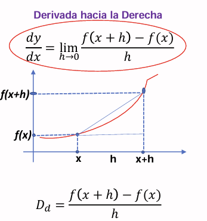
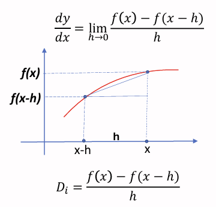
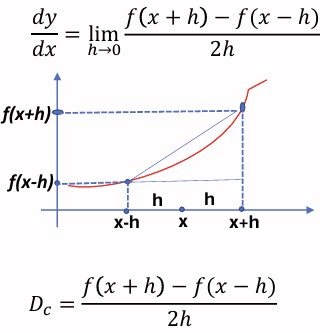

Introducción
Las derivadas numericas, es un metodo donde calculamos la tasa de cambio de una funcion con los pares ordenados, sin la necesidad de tener la funcion dada, pero esa aproximacion que damos con los puntos no coincidiran al 100% con la derivada real, pero si nos dara una aproximacion de la misma, y dependiendo del metodo que usemos, esa aproximacion sera mas o menos precisa.
Métodos de Derivadas Numéricas
Derivada Progresiva
Este metodo se es la derivada normal, donde calculamos la pendiente entre dos puntos cercanos.

Derivada Regresiva
Este metodo se usa la inversa de la derivada progresiva. donde en vez de agarrar un punto adelante, agarramos un punto atras, y calculamos la pendiente entre esos dos puntos cercanos.

Derivada Central
Este metodo utiliza puntos tanto adelante como atras para calcular la derivada, lo que generalmente proporciona una mejor aproximación.

Conclusión
En resumen, las derivadas numéricas son herramientas valiosas para aproximar la tasa de cambio de una función cuando no se dispone de una expresión analítica. Es importante elegir el método adecuado según el contexto y los datos disponibles para obtener resultados precisos.